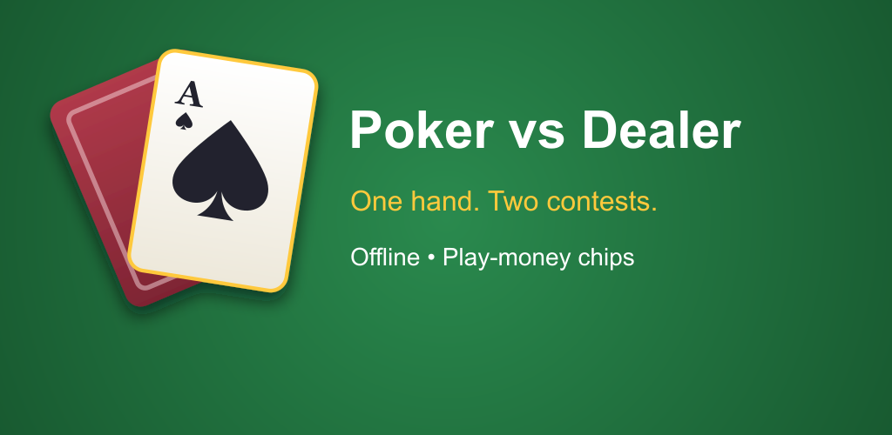
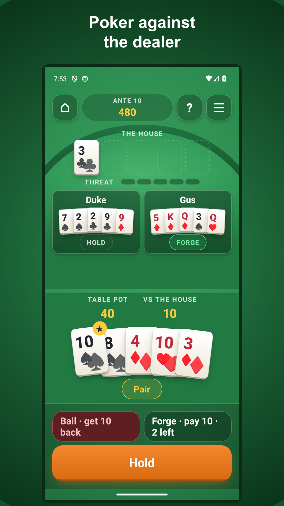
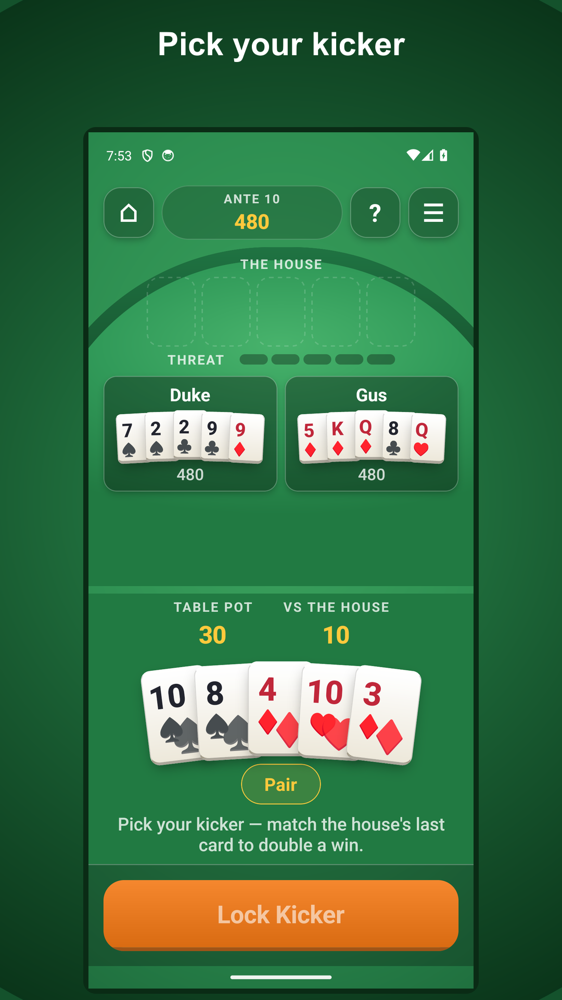
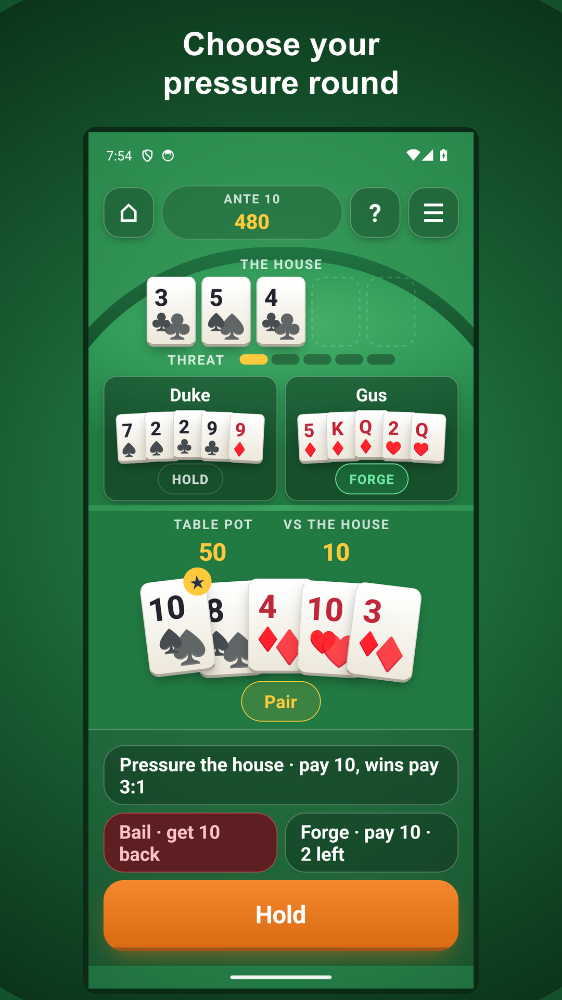
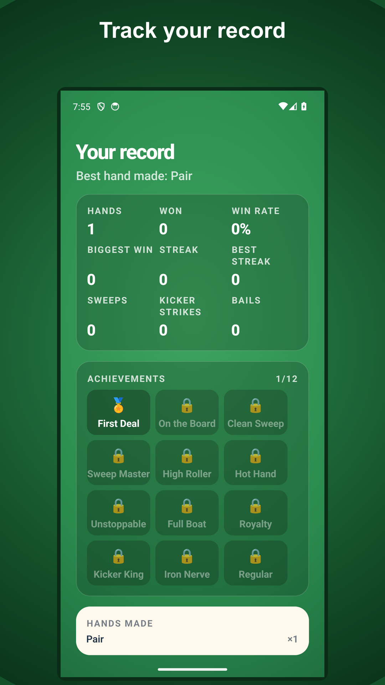
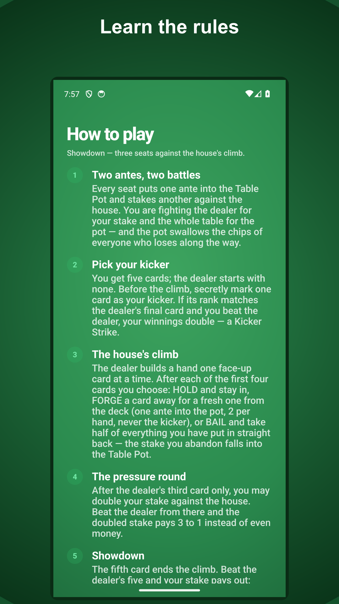
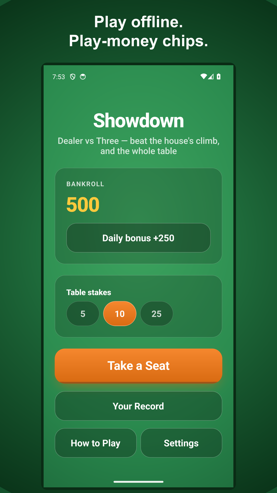

Play five-card poker offline. Hold, forge or bail against the dealer and table.
Production v3 screenshots. Version 4 with new dealer artwork has been submitted; production approval is pending.

Poker against the dealer

Pick your kicker

Choose your pressure round

Track your record

Learn the rules

Play offline. Play-money chips.

Play five-card poker against the dealer and two computer opponents, wherever you are. Poker vs Dealer is an offline card game with its own Showdown rules, clear choices and play-money chips. ONE HAND, TWO CONTESTS Your five cards compete against the house and for the table pot. The dealer builds a hand one face-up card at a time. Watch each card arrive and decide what to do next. HOLD, FORGE OR BAIL Hold your hand, pay an ante to forge a card by exchanging it for a fresh one, or bail and recover half of your committed chips. Your decisions shape both contests. PICK YOUR KICKER Choose a kicker before the dealer starts drawing. Match its rank to the dealer's final card and beat the house to double your dealer payout. THE PRESSURE ROUND After the dealer's third card, you can double your stake against the house. A win on that doubled stake pays 3 to 1 in play-money chips. BONUSES AND YOUR RECORD Win both contests outright for a Sweep bonus. Win streaks at 3, 5, 7 and 10 wins award extra chips. Track hands played, win rate, biggest win, achievements, hand categories and recent results. Read the in-game rules and payouts at any time. OFFLINE PLAY No account or internet connection is needed. Your progress and settings stay on your device. There are no ads or in-app purchases. Collect a free daily chip bonus, or use the free re-up when your bankroll cannot cover a hand. This game uses its own five-card rules; it is not Texas Hold'em. The game interface is in English. For adults. Contains simulated gambling. Chips have no cash value. No real-money gambling, cash prizes or purchases.